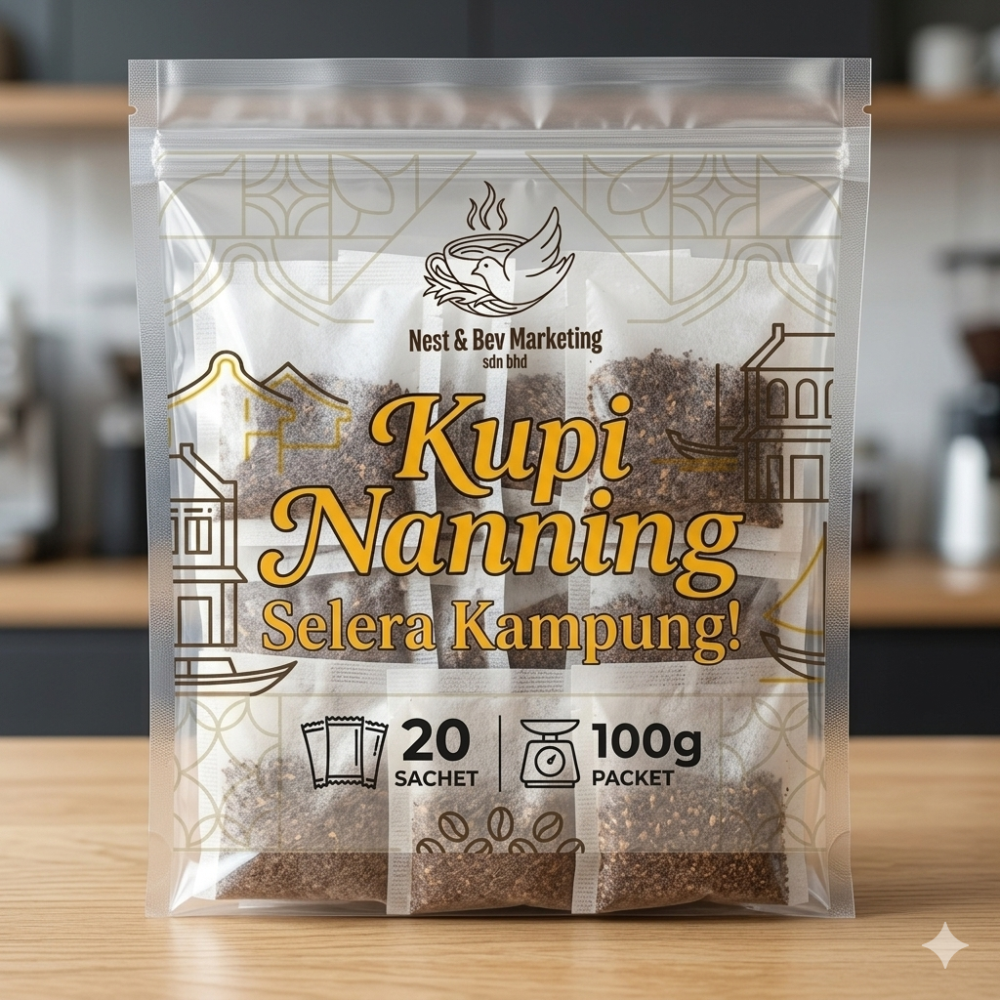

Kupi Nanning Selera Kampung!
100g Pack | 20 Teabag Sachets
The Story of the Aroma
Experience the comforting embrace of true village heritage with every pour. Kupi Nanning Selera Kampung! captures an unforgettably rich, deep, and smoky aroma that fills the entire room the moment hot water hits the sachet. It is an authentic, nostalgic fragrance that evokes early mornings in the kampung, bringing a sense of warmth and tradition straight to your modern cup.
Freshly Roasted & Grounded
We believe coffee should never lose its soul. Crafted from premium, high-quality **Robusta** beans, our coffee is expertly roasted to perfection and ground precisely to lock in its natural intensity. Packed conveniently in 20 individual teabag sachets per 100-gram pack, it delivers a powerful, full-bodied strength and an exceptionally smooth crema without the hassle of coffee dregs.
Grown with Pride in Sungai Jernih, Melaka
Every single bean carries the spirit of the land. Our coffee fields are nestled in the lush, serene landscapes of Sungai Jernih, Melaka. Cultivated with meticulous care and harvested at peak ripeness, the beans are processed quickly to guarantee absolute freshness from our fields to your doorstep.
Product Specifications
| Coffee Type | Premium Robusta (Roasted & Grounded) |
| Origin | Sungai Jernih, Melaka, Malaysia |
| Packaging | 100g per pack (Contains 20 Teabag Sachets) |
| Freshness | 100% Freshly Packed with Sealed Aroma |